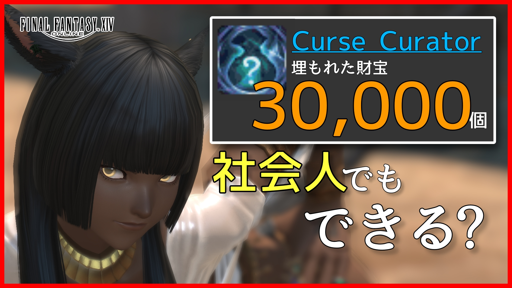
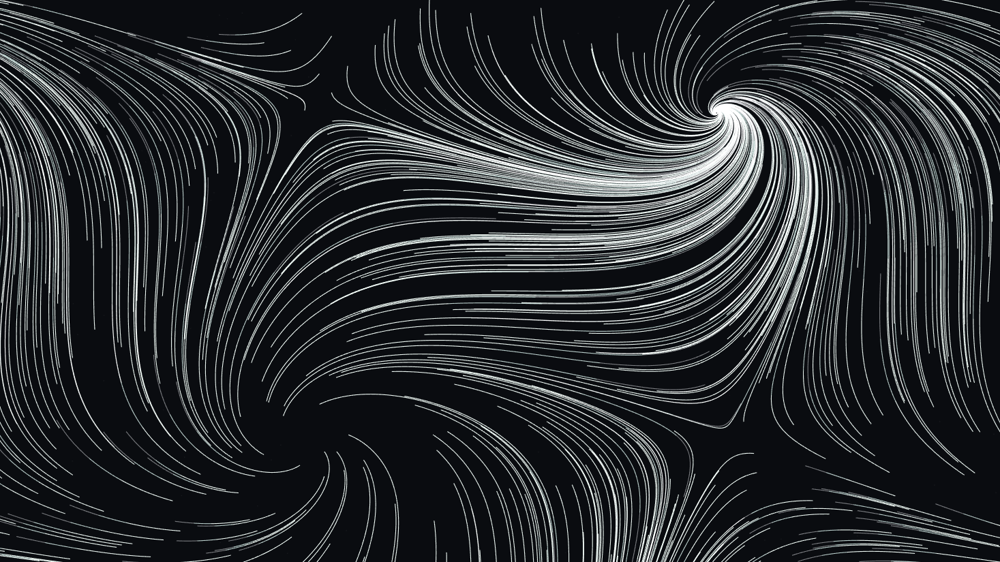

talking / living

真尋と話すために作り始めたもの。
最近は、こちらから話しかけなくても「そこにいる」感じをどう作るかを考えている。
DeNo_Hatena
ゲームをしたり、AIを作ったり、3Dモデルを作ったり、
たまに何なのか自分でもよく分からないものを作ったり。
ここには、そのうち残ったものを置いています。
things I made / kept
まとまりはないけど、だいたい全部好きでやっています。
talking / living
真尋と話すために作り始めたもの。
最近は、こちらから話しかけなくても「そこにいる」感じをどう作るかを考えている。
games / obsession

ゲームの中で、なぜかやりたくなったことを最後までやった記録。
500時間掘ったり、何も知らず工場を作ったりしている。
modeling / fan art
Blenderで作ったキャラクターたち。
好きなキャラを踊らせたかったり、使いたい人型モデルがなかったりして作り始めた。
generative / maybe art

開くたびに違う。閉じれば、その絵はもう戻ってこない。
そういう絵がWebにあったら少し面白いと思って作った。
about

井上創太
平日は化学メーカーで研究開発。
帰るとBlender、Unity、動画、ゲームなど、その時おもしろそうなものを触っています。
recently
最近やっていたこと
次に何を置くかは、まだ決まっていません。